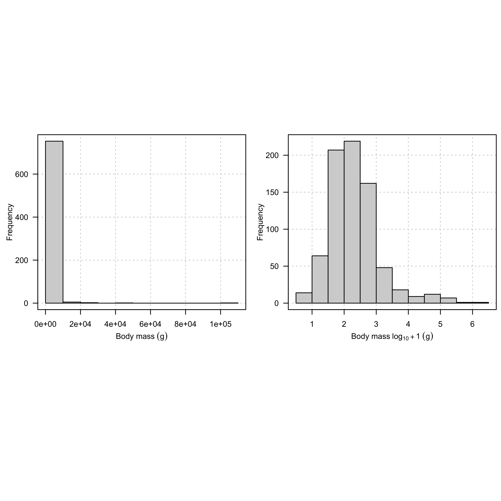

Dylan Padilla, Martha Munoz, David Skelly Yale Institute for Biospheric Studies & Yale School of the Environment, New Haven, CT 06511
Code
## Librarieslibrary(AICcmodavg)library(ape)library(BAMMtools)library(bayou)library(caper)library(car)library(cowplot)library(diversitree)library(geiger)library(ggplotify)library(grid)library(hisse)library(lattice)library(latticeExtra)library(MuMIn)library(nlme)library(patchwork)library(plotrix)library(png)library(phytools)library(raster)library(scales)library(TreeSim)library(vioplot)library(viridis)## Session info and R versionsessionInfo()
> _
> platform aarch64-apple-darwin20
> arch aarch64
> os darwin20
> system aarch64, darwin20
> status
> major 4
> minor 3.3
> year 2024
> month 02
> day 29
> svn rev 86002
> language R
> version.string R version 4.3.3 (2024-02-29)
> nickname Angel Food Cake
Code
## setting seed for reproducibility##set.seed(3487593)## Loading the dataraw.data <-read.csv('data_Meiri-2024.csv', as.is =TRUE)str(raw.data)
> 'data.frame': 12060 obs. of 28 variables:
> $ Species : chr "Ablepharus alaicus" "Ablepharus anatolicus" "Ablepharus bivittatus" "Ablepharus budaki" ...
> $ Order : chr "Squamata" "Squamata" "Squamata" "Squamata" ...
> $ Family : chr "Scincidae" "Scincidae" "Scincidae" "Scincidae" ...
> $ Genus : chr "Ablepharus" "Ablepharus" "Ablepharus" "Ablepharus" ...
> $ Main.biogeographic.region : chr "Saharo-Sindian" "Saharo-Sindian" "Saharo-Sindian" "Saharo-Sindian" ...
> $ Microhabitat : chr "Saxicolous/Terrestrial" "Terrestrial" "Saxicolous" "Terrestrial" ...
> $ Habitat.type : chr NA NA "Forest/Grassland/Shrubland" "Forest/Shrubland" ...
> $ Minimal.elevation..m. : int NA NA 600 0 150 NA 40 NA 222 NA ...
> $ Maximum.elevation..m. : int NA NA 2900 1700 1700 NA 3000 NA 2710 NA ...
> $ Diet : chr "Carnivorous" NA "Carnivorous" "Carnivorous" ...
> $ Active.time : chr "Diurnal" NA "Diurnal" "Diurnal" ...
> $ Foraging.mode : chr NA NA NA NA ...
> $ Maximum.Longevity..years. : num NA NA NA NA NA NA NA NA NA NA ...
> $ Maximum.body.mass..g. : num NA NA 4.4 2 3 1.5 3.9 NA 0.7 1.2 ...
> $ Maximum.female.length...SVL...mm..straight.carapace.length.for.turtles...SCL...mm. : num NA NA 56.5 36.8 44.4 NA 46 50 NA 61.8 ...
> $ Maximum.male.length...SVL...mm..straight.carapace.length.for.turtles...SCL...mm. : num NA NA NA NA NA NA NA NA NA NA ...
> $ Maximum.juvenile.length...SVL...mm..straight.carapace.length.for.turtles...SCL...mm.: num 22.1 NA 18.5 NA NA NA 17.5 21.5 14.5 NA ...
> $ Hatchling.neonate.mass..g. : num NA NA NA NA NA NA NA NA NA NA ...
> $ Reproductive.mode : chr "viviparous" NA "oviparous" "oviparous" ...
> $ Mean.number.of.offspring.per.litter.or.number.of.eggs.per.clutch : num NA NA 4 3.5 3.5 4.5 4.5 NA 1.5 3 ...
> $ Smallest.clutch.size : num 2 NA 2 2 3 NA 1 NA 1 1 ...
> $ Largest.clutch.size : int 7 NA 5 5 4 NA 8 NA 2 4 ...
> $ Number.of.litters.or.clutches.produced.per.year : num NA NA NA NA NA NA NA NA NA NA ...
> $ Egg.length..mm. : chr "No" NA NA NA ...
> $ Egg.width..mm. : chr "No" NA NA NA ...
> $ Mean.Tb : num NA NA NA NA NA NA NA NA NA 27.5 ...
> $ Minimum.Tb : num NA NA NA NA NA NA NA NA NA NA ...
> $ Maximum.Tb : num NA NA NA NA NA NA NA NA NA NA ...
> 'data.frame': 1806 obs. of 28 variables:
> $ Species : chr "Ablepharus sikimmensis" "Abronia gadovii" "Abronia juarezi" "Abronia monticola" ...
> $ Order : chr "Squamata" "Squamata" "Squamata" "Squamata" ...
> $ Family : chr "Scincidae" "Anguidae" "Anguidae" "Anguidae" ...
> $ Genus : chr "Ablepharus" "Abronia" "Abronia" "Abronia" ...
> $ Main.biogeographic.region : chr "Oriental" "Neotropic" "Neotropic" "Neotropic" ...
> $ Microhabitat : chr "Terrestrial" "Arboreal/Terrestrial" "Terrestrial" "Terrestrial" ...
> $ Habitat.type : chr NA NA NA NA ...
> $ Minimal.elevation..m. : int NA NA NA NA 120 0 2000 NA 150 0 ...
> $ Maximum.elevation..m. : int NA NA NA NA 2410 3000 3000 NA 560 1050 ...
> $ Diet : chr "Carnivorous" "Carnivorous" "Carnivorous" "Carnivorous" ...
> $ Active.time : chr "Diurnal" NA "Diurnal" "Diurnal" ...
> $ Foraging.mode : chr "active" "active" "active" "sit-and-wait" ...
> $ Maximum.Longevity..years. : num NA NA NA NA NA 10.9 NA NA 4.6 NA ...
> $ Maximum.body.mass..g. : num NA NA NA NA 47.9 ...
> $ Maximum.female.length...SVL...mm..straight.carapace.length.for.turtles...SCL...mm. : num 51.4 83.6 70.1 74.5 94.5 ...
> $ Maximum.male.length...SVL...mm..straight.carapace.length.for.turtles...SCL...mm. : num NA NA NA NA NA NA NA 235 NA NA ...
> $ Maximum.juvenile.length...SVL...mm..straight.carapace.length.for.turtles...SCL...mm.: num 19 28.7 25 25 31 34 NA NA 25 NA ...
> $ Hatchling.neonate.mass..g. : num NA NA NA NA NA NA NA 10.3 0.6 NA ...
> $ Reproductive.mode : chr "oviparous" "viviparous" "viviparous" "viviparous" ...
> $ Mean.number.of.offspring.per.litter.or.number.of.eggs.per.clutch : num 5 NA NA NA 6.4 11.4 NA 3.5 4.9 4 ...
> $ Smallest.clutch.size : num 2 2 3 2 3 1 NA 4 3 2 ...
> $ Largest.clutch.size : int 8 12 3 10 10 17 NA 9 8 6 ...
> $ Number.of.litters.or.clutches.produced.per.year : num NA NA NA NA NA 1 NA NA 1 NA ...
> $ Egg.length..mm. : chr NA "No" "No" "No" ...
> $ Egg.width..mm. : chr NA "No" "No" "No" ...
> $ Mean.Tb : num 29 NA NA 23.7 NA 39.9 29 NA 33.6 NA ...
> $ Minimum.Tb : num NA NA NA NA NA NA NA NA NA NA ...
> $ Maximum.Tb : num NA NA NA NA NA NA NA NA NA NA ...
Code
dim(filt.data)
> [1] 1806 28
Code
unique(filt.data$Foraging.mode)
> [1] "active" "sit-and-wait" "plastic"
Code
## How many species do we have within each## foraging behavior category?tapply(X = filt.data$Species,INDEX =list(filt.data$Foraging.mode), length)
> active plastic sit-and-wait
> 1136 104 566
Code
## How many species with data of body mass do we have## within each foraging behavior category?((bd.mass <-tapply(X = filt.data$Maximum.body.mass..g.,INDEX =list(filt.data$Foraging.mode),FUN =function(X) length(na.omit(X)))))
> active plastic sit-and-wait
> 1061 103 545
Code
## How many species with data of Mean.Tb do we have## within each foraging behavior category?((mean.tb <-tapply(X = filt.data$Mean.Tb,INDEX =list(filt.data$Foraging.mode),FUN =function(X) length(na.omit(X)))))
> active plastic sit-and-wait
> 330 69 280
Code
## Merging data of lizard rangesnames(area)[1] <-'Species'merg.data <-merge(filt.data, area, by ='Species')str(merg.data)
> 'data.frame': 976 obs. of 29 variables:
> $ Species : chr "Abronia taeniata" "Acanthocercus atricollis" "Acanthocercus yemensis" "Acanthodactylus beershebensis" ...
> $ Order : chr "Squamata" "Squamata" "Squamata" "Squamata" ...
> $ Family : chr "Anguidae" "Agamidae" "Agamidae" "Lacertidae" ...
> $ Genus : chr "Abronia" "Acanthocercus" "Acanthocercus" "Acanthodactylus" ...
> $ Main.biogeographic.region : chr "Neotropic" "Afrotropic" "Saharo-Sindian" "Saharo-Sindian" ...
> $ Microhabitat : chr "Arboreal" "Arboreal" "Saxicolous" "Terrestrial" ...
> $ Habitat.type : chr "Forest" "Savanna" "Rocky" "Shrubland" ...
> $ Minimal.elevation..m. : int 120 0 2000 150 0 -385 0 0 57 62 ...
> $ Maximum.elevation..m. : int 2410 3000 3000 560 1050 2000 300 2500 777 709 ...
> $ Diet : chr "Carnivorous" "Carnivorous" "Omnivorous" "Carnivorous" ...
> $ Active.time : chr NA "Diurnal" "Diurnal" "Diurnal" ...
> $ Foraging.mode : chr "active" "sit-and-wait" "sit-and-wait" "active" ...
> $ Maximum.Longevity..years. : num NA 10.9 NA 4.6 NA 9 NA 2.1 NA NA ...
> $ Maximum.body.mass..g. : num 47.9 177.8 87.1 16.6 9.8 ...
> $ Maximum.female.length...SVL...mm..straight.carapace.length.for.turtles...SCL...mm. : num 94.5 113.9 95 64.9 52.7 ...
> $ Maximum.male.length...SVL...mm..straight.carapace.length.for.turtles...SCL...mm. : num NA NA NA NA NA NA NA NA NA NA ...
> $ Maximum.juvenile.length...SVL...mm..straight.carapace.length.for.turtles...SCL...mm.: num 31 34 NA 25 NA 26.5 26 29 NA NA ...
> $ Hatchling.neonate.mass..g. : num NA NA NA 0.6 NA 0.6 NA NA NA NA ...
> $ Reproductive.mode : chr "viviparous" "oviparous" "oviparous" "oviparous" ...
> $ Mean.number.of.offspring.per.litter.or.number.of.eggs.per.clutch : num 6.4 11.4 NA 4.9 4 4.3 5.5 3.7 NA NA ...
> $ Smallest.clutch.size : num 3 1 NA 3 2 1 1 1 NA NA ...
> $ Largest.clutch.size : int 10 17 NA 8 6 8 10 8 NA NA ...
> $ Number.of.litters.or.clutches.produced.per.year : num NA 1 NA 1 NA 1 NA 1.5 NA NA ...
> $ Egg.length..mm. : chr "No" NA NA NA ...
> $ Egg.width..mm. : chr "No" NA NA NA ...
> $ Mean.Tb : num NA 39.9 29 33.6 NA 36.2 NA 34.8 NA NA ...
> $ Minimum.Tb : num NA NA NA NA NA NA NA NA NA NA ...
> $ Maximum.Tb : num NA NA NA NA NA NA NA NA NA NA ...
> $ area : num 7.72e+09 5.95e+12 4.46e+10 5.38e+09 9.22e+11 ...
Code
## How many species with distribution range##data do we have within each foraging behavior category?((range.area <-tapply(X = merg.data$area,INDEX =list(merg.data$Foraging.mode),FUN =function(X) length(na.omit(X)))))
## now let's do our stochastic mappinglizard.maps.ard <-make.simmap(pruned.tree, map.spp, model ="ARD",nsim =5, pi ='estimated', Q ='mcmc')lizard.maps.sym <-make.simmap(pruned.tree, pi ='estimated', map.spp, Q ='mcmc', model ="SYM",nsim =5)lizard.maps.er <-make.simmap(pruned.tree, map.spp, pi ='estimated',Q ='mcmc', model ="ER",nsim =5)## model selection based on AICdata.frame(Model =c("modER", "modARD", "modSYM"),AIC =c(AIC(lizard.maps.er), AIC(lizard.maps.ard),AIC(lizard.maps.sym)), stringsAsFactors =FALSE)## increasing the simulationslizard.maps.sym <-make.simmap(pruned.tree, map.spp, model ="SYM", nsim =100000)save(lizard.maps.sym, file ="stochastic.map.sym.RData")
Code
## convert to tree with unbranching nodesidx <-sample(1:length(lizard.maps.sym), 1)tt <-map.to.singleton(lizard.maps.sym[[idx]])## compute all node heightsH <-nodeHeights(tt)## pull out heights all all eventsh <-max(H)-branching.times(tt)## get the states at each eventss <-setNames(as.factor(names(tt$edge.length)), tt$edge[ , 2])## create a matrix to count lineageslineages <-matrix(0, length(h), length(levels(as.factor(map.spp))),dimnames =list(names(h), levels(as.factor(map.spp))))## count themfor(i in1:length(h)){ ii <-intersect(which(h[i]>H[ , 1]), which(h[i]<=H[ , 2])) lineages[i,] <-summary(ss[ii])}## sort by eventii <-order(h)times <- h[ii]lineages <- lineages[ii, ]layout(matrix(c(0, 0, 0, 0,1, 1, 2, 2,1, 1, 2, 2,0, 0, 0, 0), nrow =4, ncol =4, byrow =TRUE))## create plot areaplot(NA, xlim =range(times), ylim =c(0, max(lineages)),ylab ="Lineages", bty ="n", las =1,xlab ="Time (mya)", axes =FALSE)## add lineages through time for each typelines(times, lineages[ , 1], type ="s",lwd =3, col ='#39568CFF')lines(times, lineages[ , 2], type ="s",col ='green4', lwd =3)lines(times, lineages[ , 3], type ="s",col ='#DCE319FF', lwd =4)## superimpose treecols <-setNames(make.transparent(c('#39568CFF', 'green4', '#DCE319FF'), 0.5),levels(as.factor(map.spp)))plot(lizard.maps.sym[[idx]], cols, ftype ="off", add =TRUE,lwd =1, mar =c(5.1, 4.1, 4.1, 2.1))obj<-markChanges(lizard.maps.sym[[idx]], plot =FALSE)for(i in1:nrow(obj)) lines(rep(obj[i,"x"] , 2), c(0, obj[i,"y"]),lty ="dotted", col =make.transparent("grey", 0.8))legend("topleft", levels(as.factor(map.spp)), pch =22,pt.bg =c('#39568CFF', 'green4', '#DCE319FF'),pt.cex =1.2 , cex =0.8, bty ="n")axis(1, at =round(seq(0, max(nodeHeights(lizard.maps.sym[[idx]])),length.out =4), 0),label =round(seq(max(nodeHeights(lizard.maps.sym[[idx]])), 0,length.out =4), 0), cex.axis =0.8)axis(2, las =1, cex.axis =0.8)## create plot areaplot(NA, xlim =range(times), ylim =c(0, max(lineages)),ylab ="Lineages", bty ="n", las =1,xlab ="Time (mya)", axes =FALSE)grid()## add lineages through time for each typelines(times, lineages[ , 1], type ="s",lwd =3, col ='#39568CFF')lines(times, lineages[ , 2], type ="s",col ='green4', lwd =3)lines(times, lineages[ , 3], type ="s",col ='#DCE319FF', lwd =4)legend("topleft", levels(as.factor(map.spp)),pch =22, pt.bg =c('#39568CFF', 'green4', '#DCE319FF'),pt.cex =1.2 , cex =0.8, bty ="n")axis(1, at =round(seq(0, max(nodeHeights(lizard.maps.sym[[idx]])),length.out =4), 0),label =round(seq(max(nodeHeights(lizard.maps.sym[[idx]])), 0,length.out =4), 0), cex.axis =0.8)axis(2, las =1, cex.axis =0.8)box()
## setting up data for MuSEE model## acording to Reptile database, there are## currently 11989 species of squamates((sampling.f <-as.numeric(tapply(X = pruned.data$Species,INDEX =list(pruned.data$Foraging.mode), length)/11989)))pruned.data$Foraging.mode <-as.character(pruned.data$Foraging.mode)pruned.data$Foraging.mode[pruned.data$Foraging.mode =='active'] <-3pruned.data$Foraging.mode[pruned.data$Foraging.mode =='plastic'] <-2pruned.data$Foraging.mode[pruned.data$Foraging.mode =='sit-and-wait'] <-1pruned.data$Foraging.mode <-as.integer(pruned.data$Foraging.mode)pruned.data <- pruned.data[pruned.tree$tip.label, ]data.frame(tree = pruned.tree$tip.label[1:10],data =rownames(pruned.data)[1:10])forg <-setNames(pruned.data$Foraging.mode, rownames(pruned.data))
Code
## writing down our MuSSE likelihood functionpruned.tree <-force.ultrametric(pruned.tree)is.ultrametric(pruned.tree)((lik.musse <-make.musse(pruned.tree, forg, 3, sampling.f = sampling.f)))p <-starting.point.musse(pruned.tree, k =3)pobj <-birthdeath(pruned.tree)bd(obj)lik.null<-constrain(lik.musse,lambda2 ~ lambda1, lambda3 ~ lambda1, mu2 ~ mu1, mu3 ~ mu1, q13 ~0, q21 ~ q12, q23 ~ q12, q31 ~0, q32 ~ q12)lik.null## fitting a model - the null model in a sense - in which## all birth & death rates are equal between states,## the character evolution is ordered (that is 1<->2<->3),## and there is a single character transition ratep[argnames(lik.null)]## fit the modelfit.null <-find.mle(lik.null, x.init = p[argnames(lik.null)])fit.null## most complex model in which all rates of speciation## & extinction depend on the character state for our## multi-state characterfit.full <-find.mle(lik.musse, x.init = p[argnames(lik.musse)])fit.full## model in which only the speciation rate () varies between states## create likelihood functionlik.lambda <-constrain(lik.musse, mu2 ~ mu1, mu3 ~ mu1, q21 ~ q12, q23 ~ q12, q32 ~ q12)## fit itfit.lambda <-find.mle(lik.lambda, p[argnames(lik.lambda)])fit.lambda## model in which extinction rate () varieslik.mu <-constrain(lik.musse, lambda2 ~ lambda1, lambda3 ~ lambda1, q13 ~0, q21 ~ q12, q23 ~ q12, q31 ~0, q32 ~ q12)fit.mu <-find.mle(lik.mu, p[argnames(lik.mu)])fit.mu## a model in which & vary, but in which## character transitions are orderedlik.lambda.mu <-constrain(lik.musse, q13 ~0, q21 ~ q12, q23 ~ q12, q31 ~0, q32 ~ q12)fit.lambda.mu <-find.mle(lik.lambda.mu, p[argnames(lik.lambda.mu)])fit.lambda.mu## a model in which & are constant,## but in which the transition process is## full flexible (i.e., unordered)lik.unordered <-constrain(lik.musse, lambda2 ~ lambda1, lambda3 ~ lambda1, mu2 ~ mu1, mu3 ~ mu1)fit.unordered <-find.mle(lik.unordered, p[argnames(lik.unordered)])fit.unordered## comparing our fitted modelsAnovaResults <-anova(fit.null, all.different = fit.full, free.lambda = fit.lambda, free.mu = fit.mu, free.lambda.mu = fit.lambda.mu, free.q = fit.unordered)save(AnovaResults, file ='anova-models.RData')aicw(setNames(AnovaResults$AIC,rownames(AnovaResults)))coef(fit.full)## Bayesian mcmc to get posterior probability distributionsprior <-make.prior.exponential(1/2)## because of the type of MCMC used by diversitree,## is to set a control parameter w. This parameter## affects how many function evaluations are required## between updates to the MCMC chain; however we need## to do some preliminary sampling from the posterior## distribution to set itprelim <-mcmc(lik.musse, fit.full$par, nsteps =100,prior = prior, w =1, print.every =0)head(prelim)## Fitzjohn recommends setting ww <-diff(sapply(prelim[2:(ncol(prelim)-1)], quantile, c(0.05, 0.95)))w## running the mcmcmcmc.fit.full <-mcmc(lik.musse, p[colnames(w)],nsteps =1e5, prior = prior,w = w, print.every =1000)save(mcmc.fit.full, file ="mcmc.fit.full.RData")
Code
## likelihood profile showing how the## likelihood changed through the MCMC runplot(mcmc.fit.full$i, mcmc.fit.full$p, type ='n',xlab ='', ylab ='', las =1, axes =FALSE)grid()par(new =TRUE)plot(mcmc.fit.full$i, mcmc.fit.full$p, type ='l', xlab ='Generation',ylab ='log(L)', las =1)
Code
##png('./imgs/figure2.png', width = 7, height = 7, units = 'in',## res = 360)##pdf('./imgs/figuer2.pdf')layout(matrix(c(0, 0, 0, 0, 0, 0,1, 1, 2, 2, 3, 3,1, 1, 2, 2, 3, 3,0, 0, 0, 0, 0, 0), ncol =6, nrow =4, byrow =TRUE))## computing the mean of our posterior sample,## and we can also compute things like the density## or the 95% HPD interval, just as we would with## any standard Bayesian MCMCcolMeans(mcmc.fit.full)[2:ncol(mcmc.fit.full)]
##dev.off()## setting up the data for GLS models. We are using## the merg.data table because it contains data on species rangesmerg.data <-as.data.frame(merg.data)merg.data$Species <-gsub(' ', '_', as.character(merg.data$Species))rownames(merg.data) <- merg.data$Speciescheck <-name.check(lizard.tree, merg.data)rm_phy <- check$tree_not_datarm_dat <- check$data_not_treepruned.tree.mrg <-drop.tip(lizard.tree, rm_phy)pruned.data.mrg <-subset(merg.data,subset =rownames(merg.data) %in% pruned.tree.mrg$tip,select =names(merg.data))name.check(pruned.tree.mrg, pruned.data.mrg)
> 'data.frame': 762 obs. of 30 variables:
> $ Species : chr "Acanthocercus_atricollis" "Acanthodactylus_beershebensis" "Acanthodactylus_boskianus" "Acanthodactylus_cantoris" ...
> $ Order : chr "Squamata" "Squamata" "Squamata" "Squamata" ...
> $ Family : chr "Agamidae" "Lacertidae" "Lacertidae" "Lacertidae" ...
> $ Genus : chr "Acanthocercus" "Acanthodactylus" "Acanthodactylus" "Acanthodactylus" ...
> $ Main.biogeographic.region : chr "Afrotropic" "Saharo-Sindian" "Saharo-Sindian" "Saharo-Sindian" ...
> $ Microhabitat : chr "Arboreal" "Terrestrial" "Terrestrial" "Terrestrial" ...
> $ Habitat.type : chr "Savanna" "Shrubland" "Desert/Shrubland" "Desert/Shrubland" ...
> $ Minimal.elevation..m. : int 0 150 -385 0 0 62 NA 0 90 270 ...
> $ Maximum.elevation..m. : int 3000 560 2000 300 2500 709 NA 600 100 900 ...
> $ Diet : chr "Carnivorous" "Carnivorous" "Carnivorous" "Carnivorous" ...
> $ Active.time : chr "Diurnal" "Diurnal" "Diurnal" "Diurnal" ...
> $ Foraging.mode : chr "sit-and-wait" "active" "active" "active" ...
> $ Maximum.Longevity..years. : num 10.9 4.6 9 NA 2.1 NA NA NA NA 4 ...
> $ Maximum.body.mass..g. : num 177.8 16.6 19.5 19.1 13.8 ...
> $ Maximum.female.length...SVL...mm..straight.carapace.length.for.turtles...SCL...mm. : num 113.9 64.9 60.1 48 68.6 ...
> $ Maximum.male.length...SVL...mm..straight.carapace.length.for.turtles...SCL...mm. : num NA NA NA NA NA NA NA NA NA NA ...
> $ Maximum.juvenile.length...SVL...mm..straight.carapace.length.for.turtles...SCL...mm.: num 34 25 26.5 26 29 NA NA NA NA 30 ...
> $ Hatchling.neonate.mass..g. : num NA 0.6 0.6 NA NA NA NA NA NA NA ...
> $ Reproductive.mode : chr "oviparous" "oviparous" "oviparous" "oviparous" ...
> $ Mean.number.of.offspring.per.litter.or.number.of.eggs.per.clutch : num 11.4 4.9 4.3 5.5 3.7 NA 3.3 NA 4 3.7 ...
> $ Smallest.clutch.size : num 1 3 1 1 1 NA 2 NA 4 2 ...
> $ Largest.clutch.size : int 17 8 8 10 8 NA 4 NA 4 7 ...
> $ Number.of.litters.or.clutches.produced.per.year : num 1 1 1 NA 1.5 NA NA NA NA 4 ...
> $ Egg.length..mm. : chr NA NA NA NA ...
> $ Egg.width..mm. : chr NA NA NA NA ...
> $ Mean.Tb : num 39.9 33.6 36.2 NA 34.8 NA NA NA 35.1 35.3 ...
> $ Minimum.Tb : num NA NA NA NA NA NA NA NA NA NA ...
> $ Maximum.Tb : num NA NA NA NA NA NA NA NA NA NA ...
> $ area : num 5.95e+12 5.38e+09 1.58e+13 1.42e+12 1.03e+12 ...
> $ rep.output : num 11.4 4.9 4.3 NA 5.55 NA NA NA NA 14.8 ...
Code
layout(matrix(c(0, 0, 0, 0,1, 1, 2, 2,1, 1, 2, 2,0, 0, 0, 0), nrow =4,ncol =4, byrow =TRUE))hist(na.omit(pruned.data.mrg$Maximum.body.mass..g.),main ='', las =1, border ='white', col ='white',axes =FALSE, xlab ='', ylab ='')grid()par(new =TRUE)hist(na.omit(pruned.data.mrg$Maximum.body.mass..g.),main ='', las =1, xlab =expression('Body mass'~(g)))box()hist(na.omit(log10(pruned.data.mrg$Maximum.body.mass..g.)+1),main ='', las =1, border ='white', col ='white',axes =FALSE, xlab ='', ylab ='')grid()par(new =TRUE)hist(na.omit(log10(pruned.data.mrg$Maximum.body.mass..g.)+1),main ='', las =1, xlab =expression('Body mass'~log[10]+1~(g)))box()

Code
## transforming the datapruned.data.mrg$Maximum.body.mass..g. <-log10(pruned.data.mrg$Maximum.body.mass..g.)+1layout(matrix(c(0, 0, 0, 0,1, 1, 2, 2,1, 1, 2, 2,0, 0, 0, 0), nrow =4,ncol =4, byrow =TRUE))hist(na.omit(pruned.data.mrg$Mean.Tb), main ='',las =1, border ='white', col ='white',axes =FALSE, xlab ='', ylab ='')grid()par(new =TRUE)hist(na.omit(pruned.data.mrg$Mean.Tb), main ='',las =1, xlab =expression('Mean body temperature'~('\u00B0C')))box()hist(na.omit(log10(pruned.data.mrg$Mean.Tb)), main ='',las =1, border ='white', col ='white',axes =FALSE, xlab ='', ylab ='')grid()par(new =TRUE)hist(na.omit(log10(pruned.data.mrg$Mean.Tb)),main ='', las =1,xlab =expression('Mean body temperature'~log[10]~('\u00B0C')))box()
Code
layout(matrix(c(0, 0, 0, 0,1, 1, 2, 2,1, 1, 2, 2,0, 0, 0, 0), nrow =4,ncol =4, byrow =TRUE))hist(na.omit(pruned.data.mrg$area),main ='', las =1, border ='white',col ='white', axes =FALSE, xlab ='', ylab ='')grid()par(new =TRUE)hist(na.omit(pruned.data.mrg$area), main ='',las =1, xlab =expression('Area of geographic range'~(km^2)))box()hist(na.omit(log10(pruned.data.mrg$area)),main ='', las =1, border ='white',col ='white', axes =FALSE, xlab ='', ylab ='')grid()par(new =TRUE)hist(na.omit(log10(pruned.data.mrg$area)),main ='', las =1,xlab =expression('Area of geographic range'~log[10]~(km^2)))box()
## transforming datapruned.data.mrg$rep.output <-log10(pruned.data.mrg$rep.output)names(pruned.data.mrg)[c(14, 26, 29, 30)] <-c(expression('Maximum body mass'),expression('Mean body temperature'),expression('Area of geographic range'),'Reproductive output')## looking at broad patterns in the data firstplot(pruned.data.mrg[c(14, 26, 29, 30)], pch =16, las =1)
Code
## fitting phylogenetic generalized least square modelstapply(X = pruned.data.mrg$'Maximum body mass',INDEX =list(pruned.data.mrg$Foraging.mode),FUN =function(X) length(na.omit(X)))
> active plastic sit-and-wait
> 332 79 351
Code
tapply(X = pruned.data.mrg$'Mean body temperature',INDEX =list(pruned.data.mrg$Foraging.mode),FUN =function(X) length(na.omit(X)))
> active plastic sit-and-wait
> 192 58 234
Code
tapply(X = pruned.data.mrg$'Area of geographic range',INDEX =list(pruned.data.mrg$Foraging.mode),FUN =function(X) length(na.omit(X)))
## filtering data by body mass and geographic rangemass.data <- pruned.data.mrg[!is.na(pruned.data.mrg$'Maximum body mass'), ]range.data <- pruned.data.mrg[!is.na(pruned.data.mrg$'Area of geographic range'), ]mass.range <- mass.data[mass.data$Species %in% range.data$Species, ]rownames(mass.range) <- mass.range$Speciescheck <-name.check(lizard.tree, mass.range)rm_phy <- check$tree_not_datarm_dat <- check$data_not_treetree.mass.range <-drop.tip(lizard.tree, rm_phy)pruned.mass.range <-subset(mass.range,subset =rownames(mass.range) %in% tree.mass.range$tip,select =names(mass.range))name.check(tree.mass.range, pruned.mass.range)
> [1] "OK"
Code
head(pruned.mass.range[c(12, 14, 29)])
> Foraging.mode Maximum body mass
> Acanthocercus_atricollis sit-and-wait 3.249932
> Acanthodactylus_beershebensis active 2.220108
> Acanthodactylus_boskianus active 2.290035
> Acanthodactylus_cantoris active 2.281033
> Acanthodactylus_erythrurus plastic 2.139879
> Acanthodactylus_gongrorhynchatus active 1.812913
> Area of geographic range
> Acanthocercus_atricollis 12.774717
> Acanthodactylus_beershebensis 9.730783
> Acanthodactylus_boskianus 13.199259
> Acanthodactylus_cantoris 12.151685
> Acanthodactylus_erythrurus 12.012896
> Acanthodactylus_gongrorhynchatus 11.120814
Code
## looking at body size landscape before running PGLStree <-reorder(tree.mass.range, "postorder")tree
>
> Phylogenetic tree with 762 tips and 761 internal nodes.
>
> Tip labels:
> Sphenodon_punctatus, Phyllurus_amnicola, Saltuarius_cornutus, Orraya_occultus, Carphodactylus_laevis, Underwoodisaurus_milii, ...
>
> Rooted; includes branch length(s).
Code
## error assumedMEvar <-0.1## data of body massdat <-setNames(pruned.mass.range$'Maximum body mass',rownames(pruned.mass.range))dat <- dat +rnorm(length(dat), 0, sqrt(MEvar))
Code
## Defining prior. Prior for the maximum number## of shifts was set as half of the number of branch lengthspriorOU <-make.prior(tree,dists =list(dalpha ="dhalfcauchy",dsig2 ="dhalfcauchy",dk ="cdpois", dtheta ="dnorm"),param =list(dalpha =list(scale =0.1),dsig2 =list(scale =0.1),dk =list(lambda =10,kmax =length(tree$edge.length)/2),dsb =list(bmax =1, prob =1),dtheta =list(mean =mean(dat),sd =1.5*sd(dat))))## to run our MCMC, we have to initiate## the MCMC chain with some starting valuesstartpars <-priorSim(priorOU, tree, plot =TRUE)$pars[[1]]priorOU(startpars)## let's take what we have and put it into## the function bayou.makeMCMCmcmcOU <-bayou.makeMCMC(tree, dat, SE = MEvar, prior = priorOU,new.dir =TRUE, outname ="modelOU_r001", plot.freq =NULL)## run the MCMCmcmcOU$run(100000)## the full MCMC results are written to a set of files.## We can load them back in to R as followschainOU <- mcmcOU$load()save(chainOU, file ='mcmc_modelOU.RData')## let's take a look at the results. We can set a "burnin"## parameter that tells the package coda to discard the## first bit of the chainchainOU <-set.burnin(chainOU, 0.3)##summary(chainOU)##plot(chainOU, auto.layout = FALSE)## let's visualize what we have so far. First, we will## plot the truth, then 3 alternative ways of visualizing## our chain
>
> Phylogenetic tree with 762 tips and 761 internal nodes.
>
> Tip labels:
> Sphenodon_punctatus, Phyllurus_amnicola, Saltuarius_cornutus, Orraya_occultus, Carphodactylus_laevis, Underwoodisaurus_milii, ...
>
> The tree includes a mapped, 3-state discrete character
> with states:
> active, plastic, sit-and-wait
>
> Rooted; includes branch lengths.
Code
cols.bt <-setNames(c('#39568CFF', 'green4', '#DCE319FF'),c('active', 'plastic', 'sit-and-wait'))phenogram(bt, dat, ftype ='off',fsize =0.3,col = cols.bt,xlab ="Time (mya)",ylab =expression("Maximum body mass"~log[10]~(g)),axes =FALSE)segments(x0 =-10, y0 =3.8, x1 =279,y1 =3.8, lty =2,col =alpha('black', 0.5))axis(2, seq(0, max(pruned.mass.range$'Maximum body mass'),by =2),las =1)mtext(expression('Maximum body mass'~log[10]~(g)), side =2, line =2.5)axis(1, at =round(seq(0, max(nodeHeights(bt)),length.out =4), 0),label =round(seq(max(nodeHeights(bt)), 0,length.out =4), 0), cex.axis =0.8)mtext('Time (mya)', side =1, line =3)box()legend("topleft", legend =names(cols.bt), pch =21,pt.bg = cols.bt, pt.cex =1, bty ="n",col ="transparent", cex =0.8)
## basic boxplot to look at body size among## foraging behavior categoriespar(mgp =c(2.5, 1, 0))vioplot(pruned.mass.range$'Maximum body mass'~ pruned.mass.range$Foraging.mode, border =NA,method ="jitter", side ="right", col ="white",las =1, axes =FALSE, xaxt ='n', yaxt ='n',ylab ='', xlab ='')grid(nx =NULL, ny =NULL, col =alpha("lightgray", 0.7),lwd =1, lty =2)par(new =TRUE)vioplot(pruned.mass.range$'Maximum body mass'~ pruned.mass.range$Foraging.mode, border =NA,method ="jitter", side ="right",ylab =expression(paste("Maximum body mass")~log[10]~(g)),xlab ="Foraging behavior", col =alpha(cols.bt, 0.5), las =1)segments(x0 =1,y0 =mean(pruned.mass.range$'Maximum body mass'[pruned.mass.range$Foraging.mode =="active"]),x1 =1.38,y1 =mean(pruned.mass.range$'Maximum body mass'[pruned.mass.range$Foraging.mode =="active"]),lwd =2, lty =2, col ="black")text(x =1.45,y =mean(pruned.mass.range$'Maximum body mass'[pruned.mass.range$Foraging.mode =="active"]),expression(mu))segments(x0 =2,y0 =mean(pruned.mass.range$'Maximum body mass'[pruned.mass.range$Foraging.mode =="plastic"]),x1 =2.39,y1 =mean(pruned.mass.range$'Maximum body mass'[pruned.mass.range$Foraging.mode =="plastic"]),lwd =2, lty =2, col ="black")text(x =2.45,y =mean(pruned.mass.range$'Maximum body mass'[pruned.mass.range$Foraging.mode =="plastic"]),expression(mu))segments(x0 =3,y0 =mean(pruned.mass.range$'Maximum body mass'[pruned.mass.range$Foraging.mode =="sit-and-wait"]),x1 =3.4,y1 =mean(pruned.mass.range$'Maximum body mass'[pruned.mass.range$Foraging.mode =="sit-and-wait"]),lwd =2, lty =2, col ="black")text(x =3.45,y =mean(pruned.mass.range$'Maximum body mass'[pruned.mass.range$Foraging.mode =="sit-and-wait"]),expression(mu))
active <- pred.mod[data.rep.out$Foraging.mode =='active', ]plastic <- pred.mod[data.rep.out$Foraging.mode =='plastic', ]sit.and.wait <- pred.mod[data.rep.out$Foraging.mode =='sit-and-wait', ]layout(matrix(c(0, 0, 0, 0,1, 1, 2, 2,1, 1, 2, 2,0, 0, 0, 0), nrow =4,ncol =4, byrow =TRUE))##png('./imgs/figure3.png', width = 7, height = 7, units = 'in',## res = 360)##pdf('./imgs/figuer3.pdf')plot(repro.output ~ body.mass, data = data.rep.out,pch =21,bg = cols[as.numeric(as.factor(data.rep.out$Foraging.mode))],las =1, xaxt ='n', yaxt ='n', xlab ='', ylab ='',type ='n', axes =FALSE)grid(nx =NULL, ny =NULL, col ="lightgray", lwd =1)par(new =TRUE)plot(repro.output ~ body.mass, data = data.rep.out,pch =21,bg = cols[as.numeric(as.factor(data.rep.out$Foraging.mode))],col ='black', las =1, xlab =expression("Maximum body mass"~log[10]~(g)),ylab =expression("Clutch size"~x~"clutches per year"), type ='p')lines(active$rep.out ~ active$body.mass,data = active, lwd =2.5, col ='#39568CFF')lines(plastic$rep.out ~ plastic$body.mass,data = plastic, lwd =2.5, col ='green4')lines(sit.and.wait$rep.out ~ sit.and.wait$body.mass,data = sit.and.wait, lwd =2.5, col ='#DCE319FF')legend('bottomright',legend =c('active', 'plastic','sit-and-wait'), pch =21,pt.bg =c('#39568CFF', 'green4', '#DCE319FF'),col =c('#39568CFF', 'green4', '#DCE319FF'), lwd =1,bty ='n', cex =0.8)##dev.off()plot(repro.output ~ range, data = data.rep.out,pch =21,bg = cols[as.numeric(as.factor(data.rep.out$Foraging.mode))],las =1, xaxt ='n',yaxt ='n', xlab ='',ylab ='', type ='n',axes =FALSE)grid(nx =NULL, ny =NULL,col ="lightgray", lwd =1)par(new =TRUE)plot(repro.output ~ range, data = data.rep.out,pch =21, bg = cols[as.numeric(as.factor(data.rep.out$Foraging.mode))],col ='black', las =1,xlab =expression("Area of geographic range"~log[10]~(km^2)),ylab =expression("Clutch size"~x~"clutches per year"),type ='p')lines(active$rep.out ~ active$range,data = active,lwd =2.5, col ='#39568CFF')lines(plastic$rep.out ~ plastic$range,data = plastic,lwd =2.5, col ='green4')lines(sit.and.wait$rep.out ~ sit.and.wait$range,data = sit.and.wait,lwd =2.5, col ='#DCE319FF')legend('topleft',legend =c('active', 'plastic','sit-and-wait'),pch =21, pt.bg =c('#39568CFF','green4', '#DCE319FF'),col =c('#39568CFF','green4', '#DCE319FF'),lwd =1, bty ='n', cex =0.8)
Code
## Checking homogeneity of variancelayout(matrix(c(0, 0, 0, 0,1, 1, 2, 2,1, 1, 2, 2,0, 0, 0, 0), nrow =4,ncol =4, byrow =TRUE))par(mgp =c(3, 1, 0))plot(fitted(repro.model2), resid(repro.model2),col ="grey", pch =20, las =1, xaxt ='n',yaxt ='n', ylab ='', xlab ='')grid()par(new =TRUE)plot(fitted(repro.model2), resid(repro.model2),col ="grey", pch =20, xlab ="Fitted",ylab ="Residual", main ="Fitted versus Residuals",las =1)abline(h =0, col ="darkorange", lwd =2)## Checking normalityqqnorm(resid(repro.model2), col ="darkgrey",type ='n', las =1, main ='', xaxt ='n',yaxt ='n', xlab ='', ylab ='')grid()par(new =TRUE)qqnorm(resid(repro.model2), col ="darkgrey", las =1)qqline(resid(repro.model2), col ="dodgerblue", lwd =2)
Code
## setting up the data for modeling the body temperaturetb.data <- pruned.data.mrg[!is.na(pruned.data.mrg$'Mean body temperature') &!is.na(pruned.data.mrg$'Reproductive output'), ]check <-name.check(lizard.tree, tb.data)rm_phy <- check$tree_not_datarm_dat <- check$data_not_treetree.tb <-drop.tip(lizard.tree, rm_phy)data.tb <-subset(tb.data,subset =rownames(tb.data) %in% tree.tb$tip,select =names(tb.data))name.check(tree.tb, data.tb)
## computing genome size mean among foraging behavior categoriestapply(pruned.geno.size.data$genome.size,list(pruned.geno.size.data$Foraging.mode), mean)
> active plastic sit-and-wait
> 9.204597 9.278739 9.256992
> 'data.frame': 384 obs. of 14 variables:
> $ taxon_id : int 179908 91908 91909 373863 186588 1768100 8585 2563697 911496 8773 ...
> $ taxon_rank : chr "species" "species" "species" "species" ...
> $ scientific_name : chr "Chamaeleo calyptratus" "Chamaeleo dilepis" "Chamaeleo gracilis" "Chamaeleo laevigatus" ...
> $ assembly_id : chr "GCA_043643385.1" "GCA_043090425.1" "GCA_044758725.1" "GCA_044335405.1" ...
> $ gene_count : int NA NA NA NA NA NA NA NA NA NA ...
> $ assembly_level : chr "Chromosome" "Scaffold" "Scaffold" "Scaffold" ...
> $ assembly_span : num 1.80e+09 1.79e+09 1.88e+09 1.91e+09 1.68e+09 ...
> $ contig_n50 : int 14096519 9578 6897 8372 2720 4622328 36526383 1528028 2440 1596756 ...
> $ scaffold_n50 : int 278718720 12659 8507 10563 3012 NA 174378910 1579101 29801607 NA ...
> $ contig_count : int 1033 523505 920875 936478 1493175 1221 284 12847 1666908 4303 ...
> $ scaffold_count : int 487 476822 869906 889497 1448590 NA 209 12760 1377332 NA ...
> $ chromosome_count : int 12 NA NA NA NA NA 18 NA NA NA ...
> $ gc_percent : num 43 42.5 43 42.5 41.5 41.5 41.5 41.5 43 40 ...
> $ busco_completeness: num NA NA NA NA NA NA NA NA NA NA ...
## model diagnosislayout(matrix(c(0, 0, 0, 0,1, 1, 2, 2,1, 1, 2, 2,0, 0, 0, 0), nrow =4,ncol =4, byrow =TRUE))par(mgp =c(3, 1, 0))plot(fitted(gene.model12), resid(gene.model12),col ="grey", pch =20, las =1, xaxt ='n',yaxt ='n', ylab ='', xlab ='')grid()par(new =TRUE)plot(fitted(gene.model12), resid(gene.model12),col ="grey", pch =20, xlab ="Fitted",ylab ="Residual", main ="Fitted versus Residuals",las =1)abline(h =0, col ="darkorange", lwd =2)## Checking normalityqqnorm(resid(gene.model12), col ="darkgrey",type ='n', las =1, main ='', xaxt ='n',yaxt ='n', xlab ='', ylab ='')grid()par(new =TRUE)qqnorm(resid(gene.model12), col ="darkgrey", las =1)qqline(resid(gene.model12), col ="dodgerblue", lwd =2)
Code
## looking for species with multiple genomesdupl.genomes <-tapply(genomes$Assembly.Accession,list(genomes$Organism.Name), length)((mult.genomes <- dupl.genomes[dupl.genomes >2]))
spp <-names(mult.genomes)## getting the accession number of the genomesobj <-data.frame()for(i in spp){ row <- genomes[genomes$Organism.Name == i, ] obj <-rbind(obj, row)}obj[c(1:4, 11, 14, 16)]
## determining how many species per foraging behavior## category we havespp <-gsub(' ', '_', spp)mult.genomes.forg <- pruned.data[pruned.data$Species %in% spp, ]mult.genomes.forg[c(1, 12)]